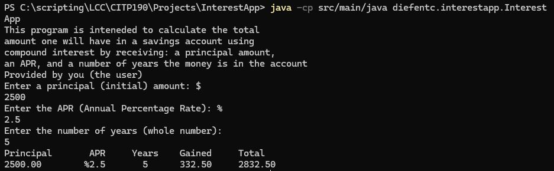
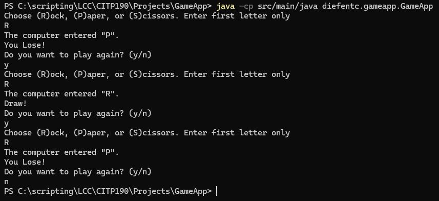

Java is a high-level, class-based, object-oriented programming language that is designed to have as few implementation dependencies as possible. It is a general-purpose programming language intended to let application developers write once, run anywhere (WORA), meaning that compiled Java code can run on all platforms that support Java without the need for recompilation.
Java was originally developed by James Gosling at Sun Microsystems and released in 1995. It is one of the most popular programming languages in use today, particularly for client-server web applications.
Java is a concurrent, class-based, object-oriented language that is specifically designed to have as few implementation dependencies as possible. It is a general-purpose programming language intended to let application developers write once, run anywhere (WORA), meaning that compiled Java code can run on all platforms that support Java without the need for recompilation.
I've only had one Java class CITP 190 - Intro to Programming in Java
Within that class, we created a few programs and I'm highlighting two fo them here
This is a program that takes input from a user and calculates the interest gained on a principal amount over a specified number of years at a given interest rate.
In class we created a CLI game that allows the user to play a game of rock, paper, scissors against the computer. The computer randomly selects one of the three options and the program determines the winner based on the rules of the game
LCC Servers will not allow to have any Java processing performed from the server side and I don't believe client side python is something that can be accomplished.
So, instead of having Java code that is executed here, I will provide some screenshots of the code in action and the output that is generated from it.